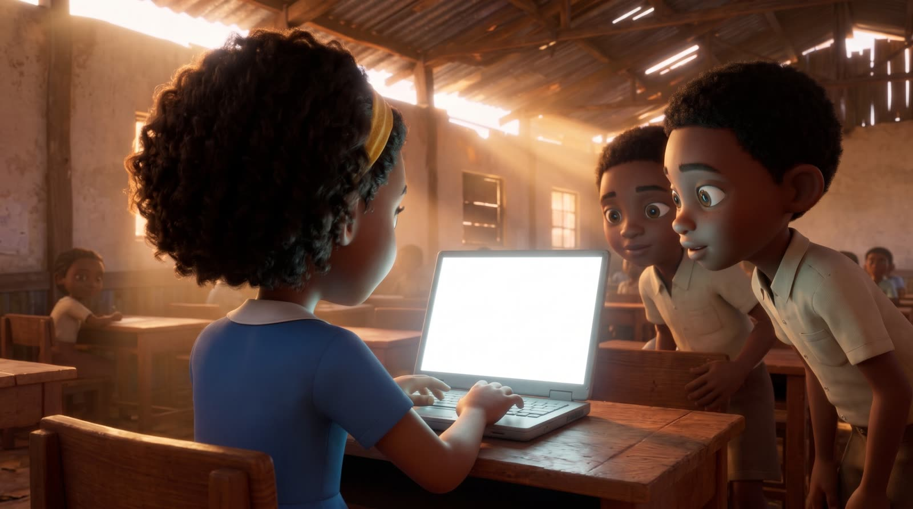
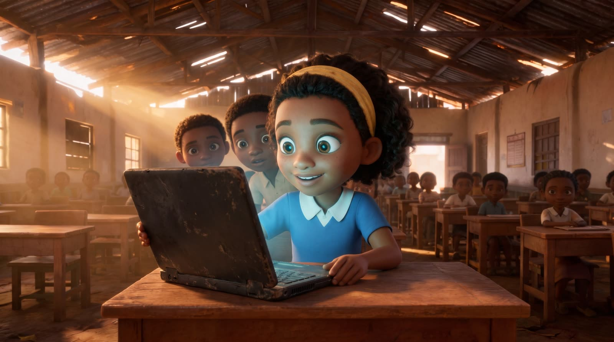
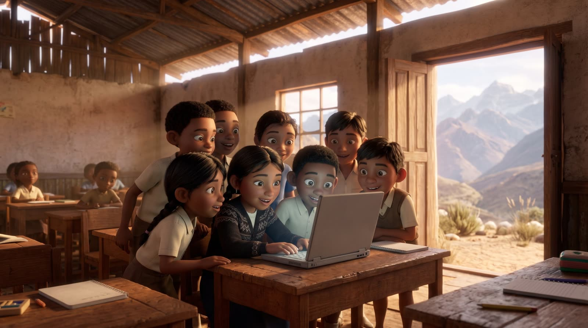
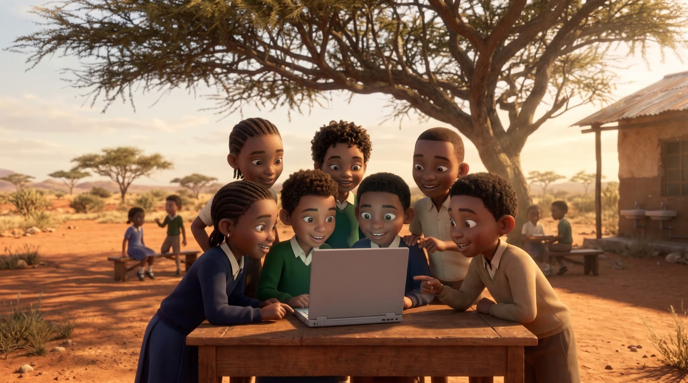
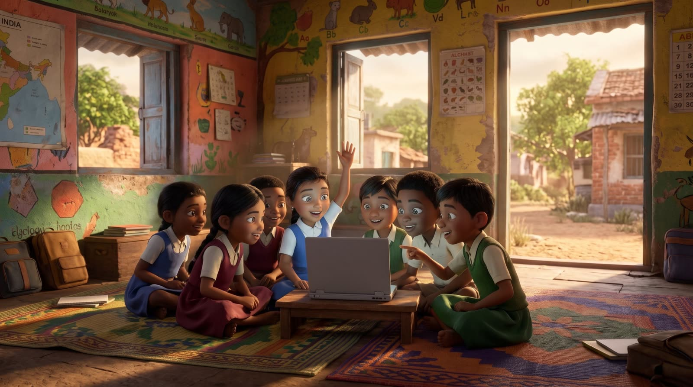
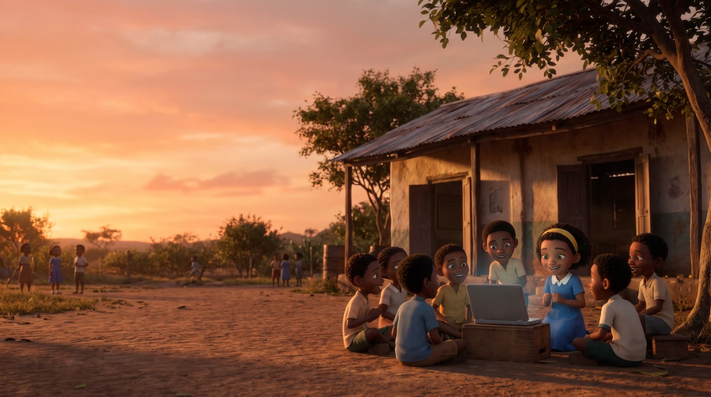

The tutor in the film is real.
The film is illustrated. Halfway through, it cuts to a screen recording of the working prototype answering a student's question on a laptop.

The film is in production.It will play here.
until the first words of an answer appear, with the model running on the laptop itself.
Measured on a MacBook Pro with M1 Pro and 16 GB of memory.network connections while it answers. Every route out is blocked and monitored during the tests.
IPv4, IPv6, UDP and DNS.Every answer shows the article it came from. When its materials don't cover a question, it says "I don't know" instead of guessing.
Sources are attached by the app, not written by the model.What happens when a student asks a question

The question is checked
A filter screens it first, so off-topic or unsafe questions get a gentle redirect.
The laptop searches its own library
A pack of openly licensed science and maths articles is stored on the device and searched locally.
A small model writes the explanation
Qwen3 4B runs on the laptop through Tether's QVAC and explains step by step, in simple words.
The student gets a source and a question back
The answer shows where it came from and ends with a question to check understanding.
Built for classrooms where the cloud isn't an option



What it isn't yet
Amara is a working prototype. It has not been tested in a school, and these are the limits we know about.
- It speaks Spanish and English. Swahili answers weren't good enough, so it shows a notice instead of responding.
- It can't tell a student whether their answer is right. It thanks them and shows how to check.
- Its safety filters look for words and can be worked around, so children should use it with an adult nearby.
- It's a small model on a laptop: far less capable than cloud assistants, and only as broad as its library.
Built with
- On-device AI
- Tether's QVAC SDK
- Language model
- Qwen3 4B, quantized to run on a laptop
- Search
- EmbeddingGemma, running locally
- Library
- Wikipedia articles under CC BY-SA 4.0
- Illustrations
- Generated with AI image and video tools
Who made it
I'm Alex Smith. Years ago I built Urli OS, an operating system deployed across 17 states in India and 54 public schools in Argentina. Now I'm building Amara: AI that works where the network doesn't.

No internet. No cloud. Just a laptop.
The code is open. If you run schools, programs or devices where connectivity is the problem, I'd like to hear from you.